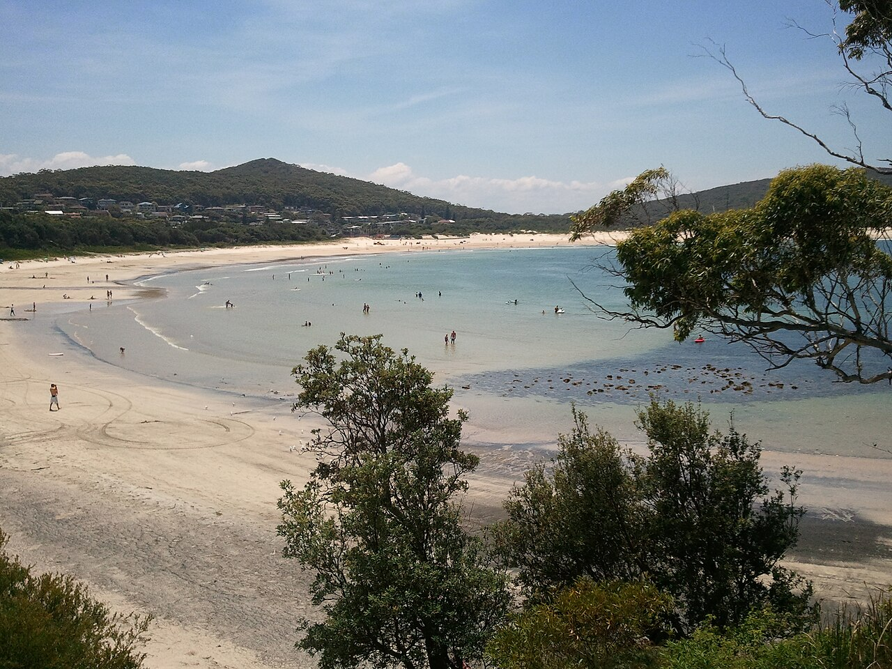

Port Stephens from Nelson Bay · 5-day family itinerary
Five days based in Nelson Bay, flying in and out of Newcastle Airport, for a seven-year-old and a four-year-old. Swims go where lifeguards patrol, the children’s fishing hour goes where the marine park allows a line, and the big dunes are reached on foot from Birubi Point.

Photo: popejon2, Fingal Bay, CC BY 2.0, via Wikimedia Commons.
.jpg){kind=link}
Checked before you commit
This illustrative route flies into Newcastle Airport, stays five days in Nelson Bay and flies home from the same airport. NSW National Parks pages for Tomaree National Park, the Fort Tomaree and Tomaree Head Summit walks and Worimi National Park; the Worimi Conservation Lands site; NSW DPIRD’s fishing fee and marine park pages and the Port Stephens–Great Lakes Marine Park zoning map; Port Stephens Council’s surf club pages; Port Stephens Koala Sanctuary; Moonshadow-TQC Cruises; Visit NSW; and Destination Port Stephens were read on 10 November 2026. Nothing was booked.
One base and one airport. Visit NSW puts Newcastle Airport about 30 minutes by car from Nelson Bay, and the Worimi Conservation Lands site says the park is 10 minutes from the centre of Nelson Bay. Tomaree National Park surrounds Shoal Bay and Fingal Bay on the same peninsula. We found no sourced drive times for the other legs, so check a map.
One anchor each morning and a softer afternoon. The longest walk is Fort Tomaree: 2.5 km return, Grade 3, 1.5 to 2 hours, with some steep sections that NSW National Parks says get slippery when wet. The Tomaree Head Summit walk above it is Grade 5, so this plan keeps it as an adult option.
We didn’t check accommodation, car hire, flight times or cruise places. Prices are what the operators’ and DPIRD’s pages showed on 10 November 2026. A booking-hub link is intent only. It doesn’t hold a room, a seat or a cruise place.
Planning boundary: dates are illustrative; the worked example runs Monday 23 to Friday 27 November 2026, five days counted from the flight in to the flight home. Port Stephens Council says it patrols One Mile Beach all year, and Fingal and Birubi from September to the end of April, every day from 9 am to 4 pm. NSW National Parks says the Tomaree National Park beaches outside those patrolled areas are not patrolled.
NSW National Parks alert pages load by script. In a headless browser on 10 November 2026 the Tomaree and Worimi alert pages showed no alert text, which we don’t treat as proof that there are no alerts. Alfred doesn’t check patrols, closures, fishing rules or fees. A booking-hub link doesn’t prove a booking.
Route and family-coordination brief
Party: two adults, one seven-year-old and one four-year-old, flying from Melbourne. Base: five days in Nelson Bay. Pace: moderate, a morning and an afternoon slot a day. Assumption: a hire car. Visit NSW lists car rental and door-to-door shuttle buses from the airport, and Destination Port Stephens lists a Port Stephens Coaches public bus; we didn’t check any of them.
Getting there: Destination Port Stephens lists direct flights between Newcastle Airport and Melbourne, Sydney, Brisbane, Canberra, Adelaide and other cities. We didn’t check timetables or fares. By road, Destination Port Stephens says Port Stephens is two and a half hours north of Sydney; Visit NSW says two hours 45 minutes to Nelson Bay.
Swim rule: swim only at a patrolled beach, between the red and yellow flags. On these dates that means One Mile, Fingal or Birubi, 9 am to 4 pm. NSW National Parks says Tomaree’s other beaches can have strong rips. The Worimi Conservation Lands beach is unpatrolled, and a 14 September 2026 notice says it is not suitable for swimming.
Fishing rule: all of Port Stephens is inside the Port Stephens–Great Lakes Marine Park. Fly Point is in a sanctuary zone: no fishing and no collecting, shells included. At Little Beach the zoning map allows land-based line fishing only, from the wheelchair access jetty, the Little Beach jetty and the beach between them, with no berley. Under-18s don’t pay the NSW recreational fishing fee, and nor does an adult only helping a child with a single rod. An adult fishing on their own pays A$7 for three days.
Fingal Spit: NSW National Parks says the sand spit across to Fingal Island and Port Stephens Lighthouse is currently impassable and asks visitors not to try to walk across it in any direction. Access to the island is by boat only until further notice. This plan stays on Fingal Beach.
Left out: the Tomaree Head Summit walk for the children (Grade 5); driving on Stockton Beach, which needs a four-wheel drive and a Worimi beach vehicle permit (A$33 for three days); sandboarding and quad tours; Fingal Island; swimming with dolphins; whale-watching (Visit NSW gives May to November, so we didn’t plan on whales); boat fishing and charters; snorkelling for the children; and nightlife.
Day 1 — Fly in, Little Beach and the children’s fishing hour
Fly into Newcastle Airport at Williamtown, which Visit NSW puts about 30 minutes by car from Nelson Bay. Collect the hire car and check in. We haven’t checked flight times, so the day stays open until you land.
Go to Little Beach Reserve, near Nelson Head Lighthouse, which Visit NSW says was built in 1872. Visit NSW names Little Beach Boathouse, and the Inner Light Tea Rooms at the lighthouse reserve, for food. Nelson Bay’s sheltered beaches, it says, suit families with young children.
This is where the fishing hour goes. The marine park zoning map allows land-based line fishing in the Little Beach zone, but only from the wheelchair access jetty, the Little Beach jetty and the beach between them, with no berley and no collecting. One rod per child, held by a parent, needs no adult fee under DPIRD’s exemption for an adult helping a child with a single rod.
Fallback: if a parent wants their own line, buy the three-day NSW fishing fee (A$7) through Service NSW before you go and carry the receipt. If wind or rain makes the jetty unpleasant, walk the lighthouse reserve and move fishing to Day 5. No swim is planned here; Little Beach is not one of the Council’s patrolled beaches.
Live-check: your flight time; the zone signs at the jetty; bag and size limits in the FishSmart NSW app.
Day 2 — Dolphin cruise and Fly Point, looking only
Go to d’Albora Marina in Nelson Bay for the Moonshadow-TQC 1.5-hour Dolphin Discovery Cruise. Its page lists departures at 10.30 am and 1.30 pm every day, boarding 15 minutes before, all ages, A$46 an adult, A$28 a child aged 4 to 14 and A$120 for a family. The cruise stays inshore, with a boom net on the way back, so pack swimmers if the children want a go.
Visit NSW says more than 100 dolphins live in the marine park. The operator says they are wild and a sighting isn’t guaranteed: there’s no refund if none are found, but it offers a non-transferable stand-by return voucher.
Lunch in town, then Fly Point, in the Fly Point–Corrie Island sanctuary zone. Here the rule is look, don’t take: no fishing and no collecting, shells included. Visit NSW lists it for snorkelling, but dive operator Pro Dive says currents are very strong and dives are best at slack water at the top of the high tide. With a four-year-old, we keep this to the shore and the rock edge.
Fallback: if the 10.30 am cruise is full or cancelled, take the 1.30 pm departure and do Fly Point in the morning. In rain, swap with the koala sanctuary on Day 4.
Live-check: your booking confirmation for the dock number, which Moonshadow-TQC says to check; the weather; the zone signs at Fly Point.
Day 3 — Fort Tomaree and Fingal Beach
Drive to the Tomaree Head car park, one of the park entry points NSW National Parks lists. Fort Tomaree walk is 2.5 km return, Grade 3, 1.5 to 2 hours, on a paved track around the lower slopes of Tomaree Head to the World War II gun emplacements built in 1941. NSW National Parks lists toilets on the walk and picnic tables at the gun emplacements. There are some steep sections, so turn back when the four-year-old is done.
The Tomaree Head Summit walk continues to the top, 161 m above the Port Stephens entrance: 2.2 km return, Grade 5, 1.5 to 2 hours. One adult can go up while the other waits with the children. Zenith Beach, near the start, is a sanctuary zone with no fishing or collecting, and Tomaree’s beaches are unpatrolled, so play on the sand but don’t swim there.
Fingal Beach, off Marine Drive, Fingal Bay. Port Stephens Council calls it a protected beach, patrolled every day from 9 am to 4 pm in this season, with a children’s playground, toilets, showers, the Longboat Café and accessible beach matting. Swim between the flags.
Don’t walk out on the Fingal Spit. NSW National Parks says the crossing to Fingal Island is currently impassable and hazardous, and the island is boat-only until further notice.
Fallback: in rain, which NSW National Parks says makes the paved sections slippery, skip the fort walk and spend the morning at Fingal Beach’s playground and café. Tomaree National Park may close in poor weather or fire danger.
Live-check: the NSW National Parks alerts for Tomaree; the fire danger rating; whether the flags are up at Fingal.
Day 4 — Stockton dunes on foot, then koalas
Drive to Birubi Beach, at the end of James Patterson Street, Anna Bay. Port Stephens Council lists a surf club with a kiosk, toilets, showers, car parking and a ramp onto the beach, and says the beach is the access point to the Stockton Bight sand dunes. Entry to the Worimi Conservation Lands is free for walkers, and its site suggests this northern end via Birubi Point if you don’t have a four-wheel drive.
Go early and take water and hats. We found no official distances or facilities for walking onto the dunes, so keep it short and turn back while the children still have legs for the sand. Vehicles are no longer allowed to drive or park on the beach left of the Gan Gan 4WD track at Birubi; further along, expect 4WDs on the beach, where the speed limit is 40 km/h and drivers must give way to pedestrians.
If you swim, swim at Birubi between the flags, 9 am to 4 pm. The Worimi beach beyond it is unpatrolled and not suitable for swimming.
Port Stephens Koala Sanctuary, One Mile. Its tickets page lists A$28 an adult, A$15 a child aged 3 to 17 and A$72 for two adults and two children, and includes a 3 Day Pass for three consecutive days. The Storywalk, SKYwalk and viewing platform are wheelchair friendly, with an incline on the SKYwalk. Holding wild koalas is not permitted in NSW, the sanctuary says, so this is a look-and-walk visit.
The sanctuary’s hours disagree on its own page: summer text says 9 am to 5 pm with last entry at 4 pm, but the current-hours table shows 9 am to 4 pm. Arrive by 2 pm so either works.
Fallback: on a hot or windy day, skip the dunes and swim at One Mile Beach, which the Council patrols all year, then do the koalas after lunch.
Live-check: the Worimi beach report and closures (the lands can close in poor weather or fire danger); the koala sanctuary’s hours that day; the flags at Birubi.
Day 5 — One last look, then fly home
Pack, then one short stop. Visit NSW lists Gan Gan Hill lookout for views over Port Stephens, Tomaree and Fingal Bay, with the Stockton Bight dunes to the south. Or take a last patrolled swim at One Mile Beach, or use the koala sanctuary’s 3 Day Pass, which still covers today if you bought it on Day 4.
Drive to Newcastle Airport, about 30 minutes according to Visit NSW, and return the car. We haven’t checked flight times, so leave room for the car return and check-in.
Fallback: if Day 1’s fishing hour was rained out, do it this morning from the Little Beach jetty instead of the lookout.
Live-check: your flight time and the car-hire return time.
Planning notes
Related travel note: A rod needs a zone map, not just bait.
Dates are illustrative. At decision time, recheck the NSW National Parks alerts for Tomaree and Worimi, the Worimi beach report, Port Stephens Council patrol times, the koala sanctuary’s hours, the cruise timetable, flight times into Newcastle Airport, and your accommodation booking.
Sources disagree on two things. The koala sanctuary’s own page gives 9 am to 5 pm in its summer text but 9 am to 4 pm in its current-hours table, so the plan arrives by 2 pm. Visit NSW puts Newcastle Airport about 30 minutes from Nelson Bay and Destination Port Stephens says 25 minutes; we used 30.
The zoning map we read is the 2018 printing of the Port Stephens–Great Lakes Marine Park map, hosted by a local fishing club; we couldn’t open DPIRD’s own copy. DPIRD names the zoning map, its user guide and the FishSmart NSW app as the places to check zones and rules, so check the app on the day.
In Alfred, while the trip is still Planning, you can keep or change the hotel and then the flights Alfred picked, and browse the activity and meal carousels. Their Like toggles aren’t saved, so a like isn’t a record of a decision. We did not test whether city search offers Nelson Bay or Port Stephens, or whether Alfred plans flights into Newcastle Airport.
Keep the route editable. Recheck current schedules, tickets, opening hours, weather, accessibility, prices, cancellation terms and supplier availability at decision time. A booking-hub link indicates intent only; it does not prove a booking occurred.
Plan a trip
Start with your people, dates and pace, then review the editable plan before booking.
Plan a trip